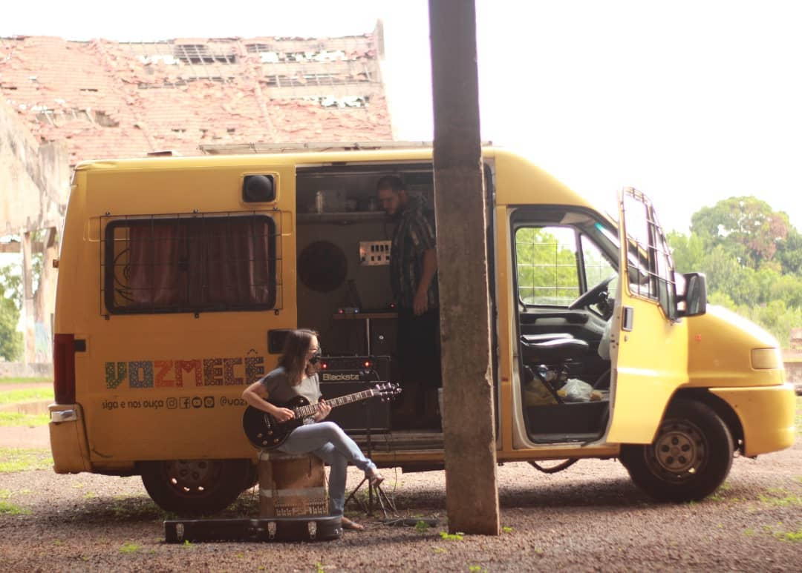

Meu nome é Ingrid Yamazato, sou licenciada em música pela Universidade Federal de Mato Grosso do Sul, atualmente mestranda pela mesma Universidade. Comecei a tocar violão aos 8 anos de idade e desde a adolescência me interesso muito por tecnologia. Comecei a estudar produção de conteúdo audiovisual nessa época, então me apaixonei por produção musical. Durante minha graduação tive um primeiro contato com a área de composição,e desde 2021 venho me dedicando ao objetivo de unir as duas coisas que mais gosto: a criação musical e a tecnologia. Por isso, entrei na segunda graduação em Engenharia de Software na Uninter para poder aprofundar os meus estudos sobre processos criativos assistidos por computador.
Estudo luthieria e construção de instrumentos sólidos desde 2017 e isso tem me ajudado bastante a compreender os mecanismos de produção sonora passíveis de serem transferidos para um instrumento virtual digital. Além disso, atuei como guitarrista e produtora de lançamentos independentes de amigos e colegas músicos da minha cidade.
Atualmente, o meu trabalho é totalmente voltado para a música contemporânea, diferente da produção musical popular à qual eu havia me acostumado. Me deparei com a música contemporânea no fim da minha graduação, e desde então estudo com a compositora Tatiana Catanzaro (UnB/Stanford) que gentilmente tem me ensinado a navegar na arte de moldar os sons no tempo.